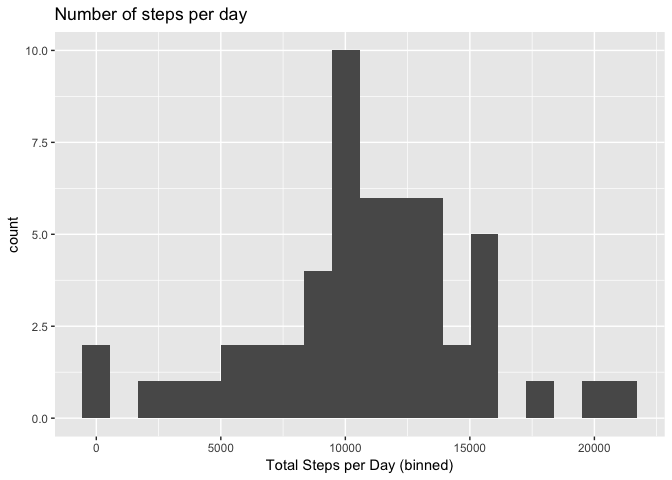
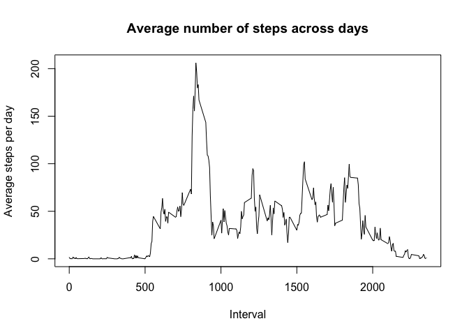
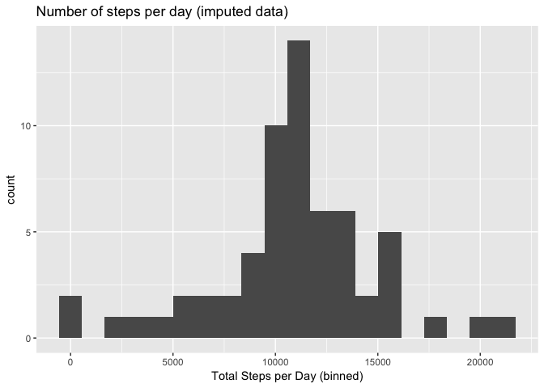
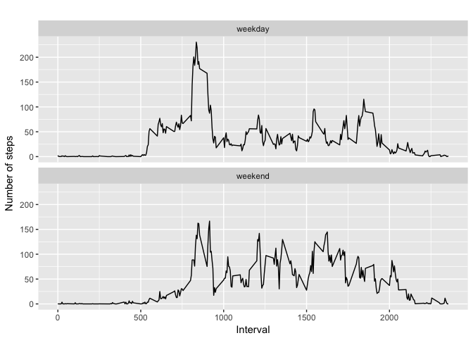

# set up working directory
setwd('/Users/pyk/Desktop/RepData_PeerAssessment1-PYK')Show any code that is needed to:
Load the data (i.e. read.csv())
Process/transform the data (if necessary) into a format suitable for your analysis
# load data
data_row <- read.csv('activity.csv')
# remove NA in data
data <- data_row[ with (data_row, { !(is.na(steps)) } ), ]
# print out first 20 rows
head(data,20)## steps date interval
## 289 0 2012-10-02 0
## 290 0 2012-10-02 5
## 291 0 2012-10-02 10
## 292 0 2012-10-02 15
## 293 0 2012-10-02 20
## 294 0 2012-10-02 25
## 295 0 2012-10-02 30
## 296 0 2012-10-02 35
## 297 0 2012-10-02 40
## 298 0 2012-10-02 45
## 299 0 2012-10-02 50
## 300 0 2012-10-02 55
## 301 0 2012-10-02 100
## 302 0 2012-10-02 105
## 303 0 2012-10-02 110
## 304 0 2012-10-02 115
## 305 0 2012-10-02 120
## 306 0 2012-10-02 125
## 307 0 2012-10-02 130
## 308 0 2012-10-02 135For this part of the assignment, you can ignore the missing values in the dataset.
Make a histogram of the total number of steps taken each day
Calculate and report the mean and median total number of steps taken per day
#steps by day
by_day <- group_by(data, date)
steps_by_day <- summarise(by_day, total = sum(steps))#histogram
qplot(steps_by_day$total, geom="histogram", bins=20, main = "Number of steps per day",
xlab = "Total Steps per Day (binned)")
#mean and median
summary(steps_by_day)## date total
## 2012-10-02: 1 Min. : 41
## 2012-10-03: 1 1st Qu.: 8841
## 2012-10-04: 1 Median :10765
## 2012-10-05: 1 Mean :10766
## 2012-10-06: 1 3rd Qu.:13294
## 2012-10-07: 1 Max. :21194
## (Other) :47Mean: 10766 Median: 10765
Make a time series plot (i.e. type = “l”) of the 5-minute interval (x-axis) and the average number of steps taken, averaged across all days (y-axis)
Which 5-minute interval, on average across all the days in the dataset, contains the maximum number of steps?
# preprocessing data for plot
steps_by_interval <- aggregate(steps ~ interval, data, mean)
# create a time series plot
plot(steps_by_interval$interval, steps_by_interval$steps, type='l',
main="Average number of steps across days", xlab="Interval",
ylab="Average steps per day")
# find row with max of steps
max_steps_row <- which.max(steps_by_interval$steps)
# find interval with this max
steps_by_interval[max_steps_row, ]## interval steps
## 104 835 206.1698The period with the max avg # of steps was 835 which had 206.17 steps on average
Note that there are a number of days/intervals where there are missing values (coded as NA). The presence of missing days may introduce bias into some calculations or summaries of the data.
Calculate and report the total number of missing values in the dataset (i.e. the total number of rows with NAs)
Devise a strategy for filling in all of the missing values in the dataset. The strategy does not need to be sophisticated. For example, you could use the mean/median for that day, or the mean for that 5-minute interval, etc.
Create a new dataset that is equal to the original dataset but with the missing data filled in.
Make a histogram of the total number of steps taken each day and Calculate and report the mean and median total number of steps taken per day. Do these values differ from the estimates from the first part of the assignment? What is the impact of imputing missing data on the estimates of the total daily number of steps?
# find missing data
sum(is.na(data_row))## [1] 23042304 missing data points
Data below is imputed using the mean value
# find missing data
data_imputed <- data_row
for (i in 1:nrow(data_imputed)) {
if (is.na(data_imputed$steps[i])) {
interval_value <- data_imputed$interval[i]
steps_value <- steps_by_interval[
steps_by_interval$interval == interval_value,]
data_imputed$steps[i] <- steps_value$steps
}
}# calculate total number of steps taken each day
df_imputed_steps_by_day <- aggregate(steps ~ date, data_imputed, sum)
head(df_imputed_steps_by_day)## date steps
## 1 2012-10-01 10766.19
## 2 2012-10-02 126.00
## 3 2012-10-03 11352.00
## 4 2012-10-04 12116.00
## 5 2012-10-05 13294.00
## 6 2012-10-06 15420.00# create histogram
qplot(df_imputed_steps_by_day$steps, geom="histogram", bins=20, main = "Number of steps per day (imputed data)", xlab = "Total Steps per Day (binned)")
# get mean and median of imputed data
mean(df_imputed_steps_by_day$steps)## [1] 10766.19median(df_imputed_steps_by_day$steps)## [1] 10766.19# get mean and median of data without NA's
mean(steps_by_day$total)## [1] 10766.19median(steps_by_day$total)## [1] 10765Mean values stayed the same (due to replacement of NA by mean values), but the median slightly changed due to the imputation using the mean 5-min values. Median is now unsurprisingly the mean due to the frequency of replacement.
For this part the weekdays() function may be of some help here. Use the dataset with the filled-in missing values for this part.
Create a new factor variable in the dataset with two levels – “weekday” and “weekend” indicating whether a given date is a weekday or weekend day.
Make a panel plot containing a time series plot (i.e. type = “l”) of the 5-minute interval (x-axis) and the average number of steps taken, averaged across all weekday days or weekend days (y-axis). The plot should look something like the following, which was created using simulated data:
#get the type of day -- using weekdays
data_imputed['type_of_day'] <- weekdays(as.Date(data_imputed$date))
#label as weekend
data_imputed$type_of_day[data_imputed$type_of_day %in% c('Saturday','Sunday') ] <- "weekend"
#label as weekday
data_imputed$type_of_day[data_imputed$type_of_day != "weekend"] <- "weekday"
# convert type_of_day from character to factor
data_imputed$type_of_day <- as.factor(data_imputed$type_of_day)
# calculate average steps by interval across all days
df_imputed_steps_by_interval <- aggregate(steps ~ interval + type_of_day, data_imputed, mean)# create a plot using the weekday vs. weekend data
qplot(interval,
steps,
data = df_imputed_steps_by_interval,
type = 'l',
geom=c("line"),
xlab = "Interval",
ylab = "Number of steps",
main = "") +
facet_wrap(~ type_of_day, ncol = 1)## Warning: Ignoring unknown parameters: type